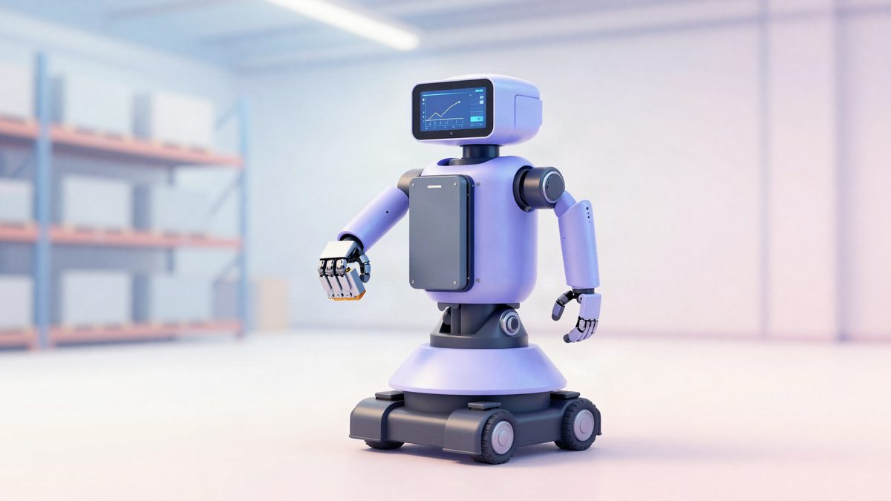

Foundation je predstavio Phantom MKII: humanoidni robot za 91 kg tereta, kišu i prašinu

Američki startup Foundation Future Industries predstavio je Phantom MKII, drugu generaciju humanoidnog robota, uz novi software Cortex II. Tvrtka tvrdi da robot može nositi do 91 kilogram tereta po kiši, snijegu i prašini, a proizvodnja bi trebala početi početkom 2027. Cijena i dostupnost u Europi nisu objavljeni.
Foundation Future Industries, startup iz San Francisca, predstavio je Phantom MKII, drugu generaciju svog humanoidnog robota, uz novi softver za upravljanje Cortex II. Dvonožni robot je prema navodima tvrtke predviđen za teške industrijske zadatke i potporu vojsci. Može nositi do 91 kg (200 funti) tereta dok hoda po kiši, snijegu i prašini. Rana proizvodnja u području zaljeva San Francisca trebala bi početi početkom 2027.
Foundation su 2024. osnovali direktor Sankaet Pathak i Mike LeBlanc, bivši časnik američke mornaričke pješaštva. Konkurenti se uglavnom bave automatizacijom skladišta i tvornica u zatvorenom prostoru, a Foundation otvoreno cilja na obranu i rad na terenu.
Što je promijenjeno u odnosu na MK-1
Prema intervjuu s Pathakom koji je 18. studenoga 2026. objavio Fast Company, MKII rješava ograničenja otkrivena u prvim terenskim testovima modela Phantom MK-1. Problemi su bili trajanje baterije, vodootpornost i nosivost, a zbog njih prva generacija nije mogla dugo raditi na otvorenom.
Inženjeri su zato dodali zaštitu od oborina i prašine te jače aktuatore za nošenje 91 kg tereta u hodu. Sklapanje je pojednostavljeno, a Pathak tvrdi da je to prepolovilo trošak materijala.
Cortex II uči fizičke zadatke promatranjem ljudskih demonstracija. Za neke operacije navodno je dovoljno 60 primjera, bez opsežnog prilagođenog programiranja.
Iskustvo iz Ukrajine
Ranije ove godine Foundation je poslao dvije jedinice modela MK-1 u Ukrajinu na procjenu u nebojnoj logistici i izviđanju. Neovisni izvještaji kasnije su pokazali neslaganja oko toga koliko su se prototipovi stvarno koristili na terenu.
Testovi su pokazali da su za opskrbu na prvoj liniji i otkrivanje opasnosti humanoidima potrebni oporavak nakon pada, robusniji zglobovi i dulja autonomija. Foundation javno prihvaća vojnu primjenu uz načelo „human-in-the-loop”, što znači da ljudski operater zadržava konačnu odluku o svakoj uporabi sile.
Pathak je u intervjuu rekao da se sadašnji obrambeni rad odnosi na logistiku, a ne na izravnu borbu, ali da bi Foundation razmotrio naoružavanje robota ako to zatraži američka vojska. „Mislim da ne možeš izgraditi utopiju, a onda je ne braniti”, rekao je.
Financijski pritisak
Foundation prije ciljanog početka proizvodnje ima ozbiljnih izazova. Prema pisanju CNBC-a i 36Kr-a, startup je nedavno imao problema s novčanim tokom, uključujući propuštenu isplatu plaća krajem listopada 2026. Nije jasno ni koliko brzo će se rani vojni istraživački ugovori pretvoriti u velike narudžbe.
Hoće li Phantom MKII u neovisnim testovima doista postići nosivost od 91 kg i otpornost na vanjske uvjete, odredit će može li Foundation svoju obrambenu strategiju pretvoriti u hardware na terenu.
Izvor: Interesting Engineering
Povezani članci
 Humanoidni robot Howl uči skupljati jaja s poda peradarnika, NC State cilja na 2027.17. studenoga 2026.
Humanoidni robot Howl uči skupljati jaja s poda peradarnika, NC State cilja na 2027.17. studenoga 2026.- Unitree H2-X: humanoidni robot koji tvrdi da može podići auto i izvoditi borilačke vještine22. listopada 2026.

JD.com predstavlja bateriju za robote koja se mijenja za 10 sekundi bez gašenja13. studenoga 2026.